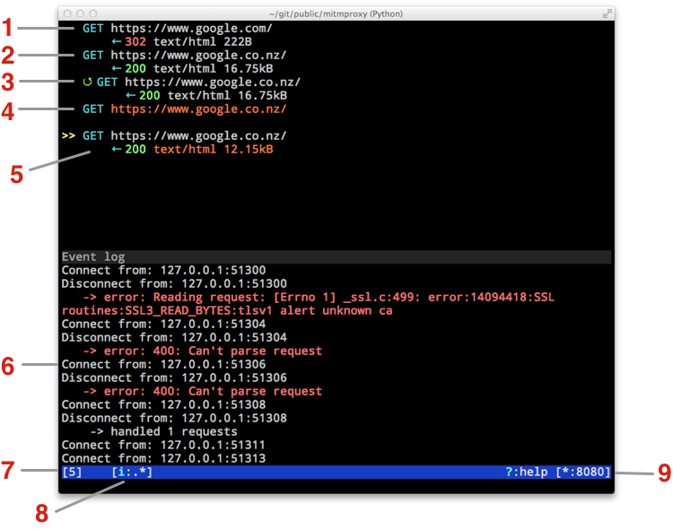
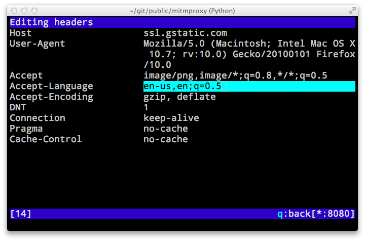
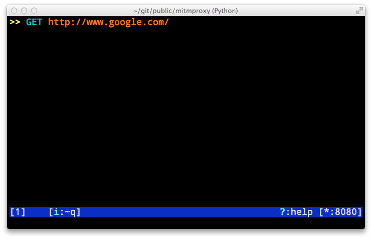
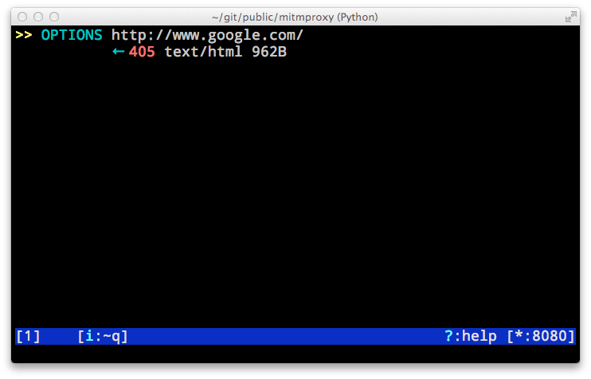

mitmproxy is a console tool that allows interactive examination and modification of HTTP traffic. It differs from mitmdump in that all flows are kept in memory, which means that it's intended for taking and manipulating small-ish samples. Use the ? shortcut key to view, context-sensitive documentation from any mitmproxy screen.
The flow list shows an index of captured flows in chronological order.

The Flow View lets you inspect and manipulate a single flow:

Much of the data that we'd like to interact with in mitmproxy is structured. For instance, headers, queries and form data can all be thought of as a list of key/value pairs. Mitmproxy has a built-in editor that lays this type of data out in a grid for easy manipulation.
At the moment, the Grid Editor is used in four parts of mitmproxy:
If there is is no data, an empty editor will be started to let you add some. Here is the editor showing the headers from a request:

To edit, navigate to the key or value you want to modify using the arrow or vi navigation keys, and press enter. The background color will change to show that you are in edit mode for the specified field:

Modify the field as desired, then press escape to exit edit mode when you're done. You can also add a row (a key), delete a row (d key), spawn an external editor on a field (e key). Be sure to consult the context-sensitive help (? key) for more.
mitmproxy's interception functionality lets you pause an HTTP request or response, inspect and modify it, and then accept it to send it on to the server or client.

We press i to set an interception pattern. In this case, the ~q filter pattern tells mitmproxy to intercept all requests. For complete filter syntax, see the Filter expressions section of this document, or the built-in help function in mitmproxy.


In this case, we viewed the request by selecting it, pressed e for "edit" and m for "method" to change the HTTP request method.

Finally, we press a to accept the modified request, which is then sent on to the server. In this case, we changed the request from an HTTP GET to OPTIONS, and Google's server has responded with a 405 "Method not allowed".